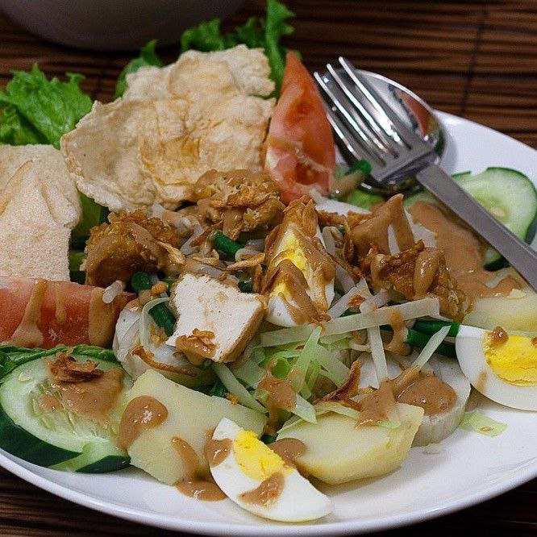
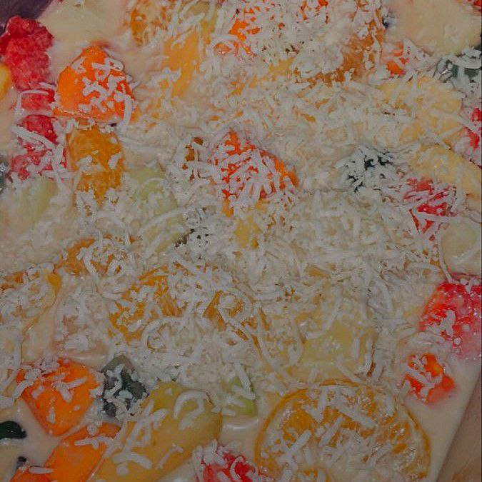
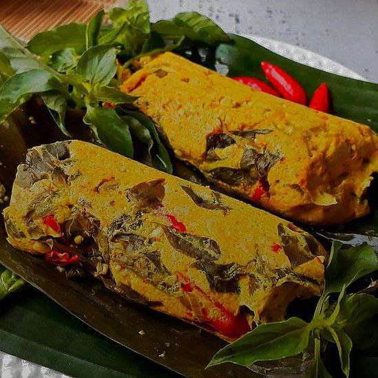
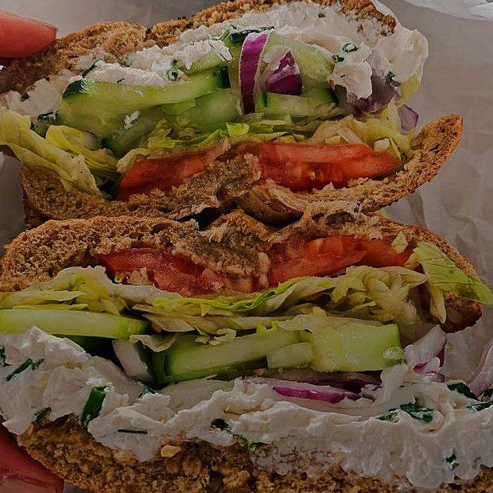
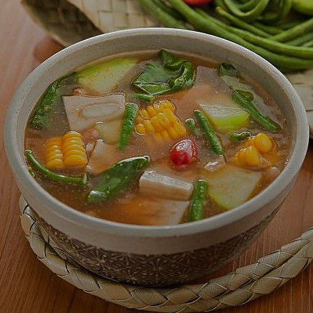
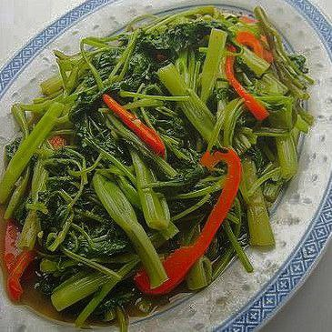

|
Healthy Food
|
Vegetables With Peanut Sauce
Gado-gado

"Makanan yang berisikan berupa sayur-sayuran yang direbus dan dicampur jadi satu dengan bumbu kacang yang dihaluskan, sambal, dan disertai irisan telur rebus. makanan menggiurkan satu ini dapat meningkatkan selera makan yang tinggi. Kandungan serat di dalamnya bermanfaat untuk membantu melancarkan sistem pencernaan sehingga bisa mencegah resiko sembelit."
|
|
Fruit Salad
Salad Buah

"Makanan yang segar dengan berbagai macam buah dan ditambah saus yogurt,mayones dan keju, yang digunakan hidangan pembuka untuk meningkatkan selera makan. Makanan ini berbagai macam vitamin seperti vitamin E, vitamin C, dan vitamin A untuk meningkatkan imun dan daya tahan tubuh yang dapat mencegah penyakit seperti kanker. Makanan ini cocok untuk diet yang dapat mengurangi lemak buruk."
|
|
Fish Wrapped in a Banana Leaf
Pepes Ikan

"Makanan satu ini yang berisikan ikan yang dibumbui seperti rempah-rempah yang dihaluskan dan dibungkus menggunakan beberapa lembar daun pisang. Pepes ikan ini memanjakan lidah dengan kelezatannya dan juga berbagai manfaat bagi kesehatan tubuh, seperti mengontrol kadar Kolestrol, mengurangi resik penyempitan pembuluh darah di otak, mencegah kanker, dan baik pencernaan. "
|
|
Vegetables Sandwich
Roti Isi Sayuran

"Makanan yang dibuat dari macam-macam roti yang diiris tipis dan diisi berbagai isian, yang berisikan sayuran atau bisa ditambah irisan daging dan berbagai olesan saus. roti ini memiliki kandungan zat bermanfaat, seperti vitamin B1, vitamin B2, dan niasin serta sejumlah mineral berupa zat besi, yodium, kalsium, dan kandungan mineral lainnya. Tinggi kandungan serat dalam roti juga sangat bagus untuk pencernaan, memiliki antioksidan dan fitoestrogen yang baik untuk mencegah penyakit jantung dan kanker."
|
|
Tamarind Vegetable Soup
Sayur Asem

"Sayuran yang dimasak berkuah dengan bumbu asam dapat meningkatkan nafsu makan. Isian sayurannya seperti kubis, wortel, tomat, kacang panjang, dan jagung manis. Kuah segarnya terbuat dari ramuan bumbu asam jawa dan bawang merah. kenikmatan segar sayura asem terdapat khasiatnya, seperti mengatasi asam lambung, mengobati meriang, mengatasi radang tenggorokan, menurunkan kolestrol, dan lain-lain."
|
|
Stir Fried Water Spinach
Cah Kangkung

"Tumis kangkung merupakan salah satu makanan olahan kangkung yang ditumis. Makanan yang nikmat untuk disantap dengan lauk yang menjadi pelengkap nasi. Kangkung memiliki kandungan gizi yang bermanfaat bagi kesehatan. Makanan ini mengandung mineral, vitamin A, vitamin B, vitamin C, asam amino, zat besi, fosfor, karoten, dan kalsium. kandungan tersebut memiliki sifat anti racun yang dapat mencegah racun yang masuk kedalam tubuh. manfaat kangkung adalah mencegah katarak, mencegah anemia, menjaga metabolisme tubuh, menjaga kesehatan otak, dan lain sebagainya."
|
|
|
|
|